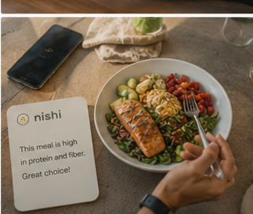
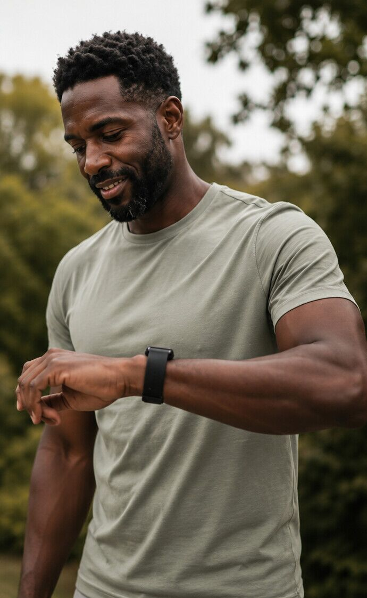
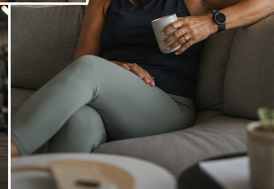

What Nishi sees
Three streams of context.
Nishi reads your kitchen, your wearables, and how you feel. It connects them so nothing falls through the cracks.

Wearables
Activity · Sleep · Heart rate
Steps · Body metrics
Steps · Body metrics
Food & Groceries
Meals · Ingredients
Nutrition · Preferences
Nutrition · Preferences
Goals & How You Feel
Protein · Weight · A1C
Symptoms · Energy · Mood
Meds · Labs · Notes
Symptoms · Energy · Mood
Meds · Labs · Notes

Food & GroceriesFood & Groceries
Nishi knows what's in your kitchen, what you've been eating, and what you want to cook. Track by voice, by photo, or by scanning your grocery receipt.

WearablesWearables
Connect your watch, your CGM, your sleep tracker. Activity, sleep, heart rate. Nishi reads them and uses them to shape what you eat and when.

Goals & How You FeelGoals & How You Feel
Tell Nishi what matters: protein, A1C, weight, energy. And how you feel: nausea, mood, ease. Share medications and labs when you want.